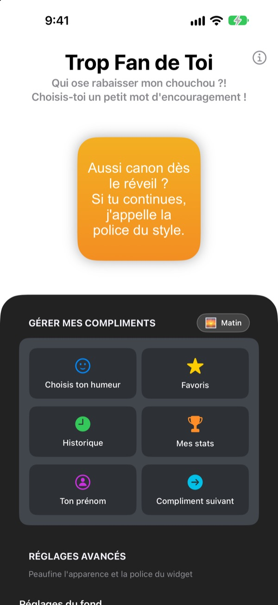
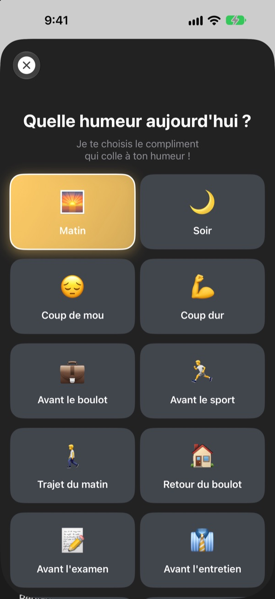
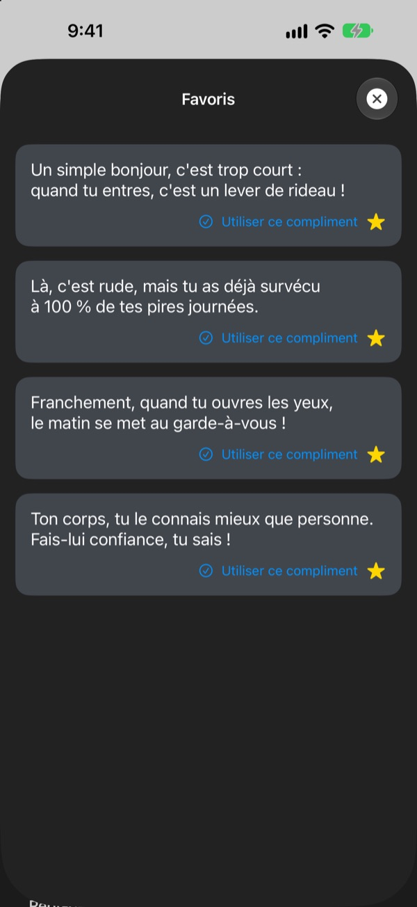
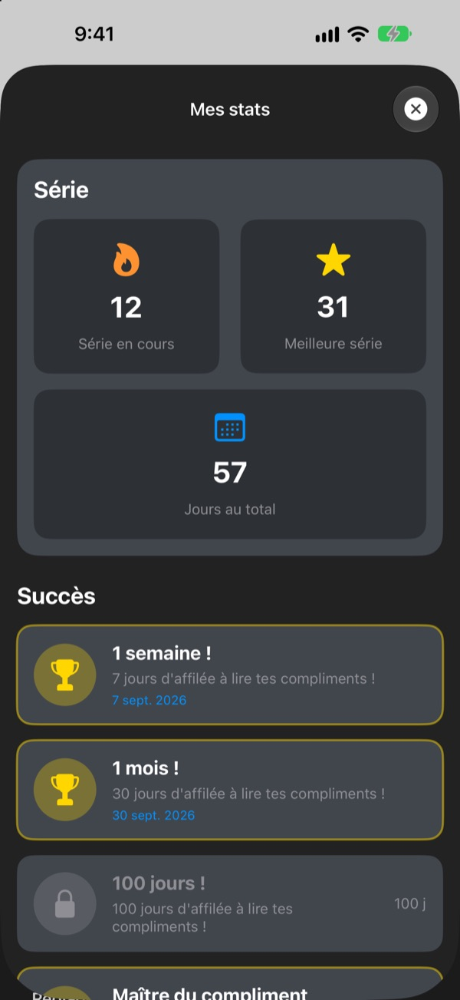

Chaque fois que tu prends ton téléphone,
ton plus grand fan t'attend
Trop Fan de Toi est un widget qui te complimente beaucoup trop, et c'est fait exprès. Un compliment du matin le matin, un compliment d'entretien avant l'entretien. Police, couleurs et fond se règlent comme tu veux.
Un seul achat pour tout débloquer. Ni abonnement, ni pub.

Reçois un compliment tout de suite
Choisis une humeur et le widget affiche le compliment qui va avec. Touche Compliment suivant pour en tirer un au hasard parmi les 281.
Ton pire critique, ce ne serait pas toi ?
Dans le trajet du matin, avant l'entretien, en rentrant du boulot, la petite voix dans ta tête râle surtout. Trop Fan de Toi prend ton parti depuis l'écran d'accueil, plusieurs fois par jour, un peu plus que raisonnable. Le temps d'un sourire, un peu de confiance revient.
Le compliment qui colle à l'humeur
Choisis parmi 14 humeurs et situations comme Matin, Trajet du matin, Coup dur, Avant l'entretien ou Avant le rencard, et le compliment assorti arrive aussitôt sur ton widget. Tu hésites ? Il y a aussi Aléatoire.

Garde ceux que tu préfères
Touche l'étoile pour l'ajouter aux Favoris, et retrouve les précédents dans l'Historique. Touche Utiliser ce compliment et il passe direct sur ton widget.

Reviens chaque jour, ça compte
Chaque jour où tu passes prolonge ta série. À 7, 30 ou 100 jours d'affilée, et à 50 et 100 jours au total, un succès se débloque.

Trois étapes pour commencer
- 1
Choisis ton humeur
Ouvre
Choisis ton humeuret touche celle du moment. - 2
Personnalise le widget
Dans les réglages avancés, choisis police, couleur du texte, fond et fréquence.
- 3
Ajoute-le à l'écran d'accueil
Maintiens le doigt sur l'écran d'accueil, touche + et cherche Trop Fan de Toi.
Ce que tu peux régler sur le widget
- Police
- 13 polices, dont Futura, Georgia et Marker Felt
- Couleur du texte
- Celle que tu veux
- Fond
- Un dégradé de deux couleurs ou une des photos fournies
- Alignement
- À gauche, centré ou à droite
- Interligne
- Lignes plus serrées ou plus aérées
- Fréquence de rafraîchissement
- Un nouveau compliment toutes les 5, 15 ou 30 minutes
La taille du widget se choisit au moment de l'ajouter à l'écran d'accueil.
Tu l'achètes une fois, c'est tout
L'app
- 281 compliments pour 14 humeurs
- Un widget d'écran d'accueil à ton style
- Favoris et Historique
- Séries et succès
Soutenir le développeur
- Un petit, moyen ou grand pourboire, au choix
- Cela ne débloque rien. C'est juste une façon de dire merci
Seulement si l'envie t'en prend.
Pas d'abonnement, pas d'achat en plus, pas de pub.
Questions fréquentes
Comment ajouter le widget ?
Maintiens le doigt sur un espace vide de l'écran d'accueil jusqu'à ce que les icônes bougent, touche + en haut, cherche Trop Fan de Toi et choisis une taille.
Comment le compliment suivant est-il choisi ?
Quand tu choisis une humeur, un compliment pour elle arrive aussitôt sur le widget. Ensuite, le widget en affiche un au hasard parmi les 281, à la fréquence choisie. Dans l'app, tu peux aussi toucher Compliment suivant pour passer au suivant.
Je peux changer la police ou la fréquence du widget ?
Oui. Dans les réglages avancés, tu changes la police, la couleur du texte, le fond, l'alignement, l'interligne et la fréquence de rafraîchissement : 5, 15 ou 30 minutes.
Le widget n'a pas changé tout de suite.
C'est iOS qui décide quand redessiner les widgets, il peut donc avoir un peu de retard sur la fréquence choisie. Ouvre l'app puis ferme-la, et le widget se met à jour.
Comment marche la série ?
Chaque jour d'affilée où tu regardes un compliment allonge ta série. Dans Mes stats, tu vois ta série en cours, ton record, le total de jours et tes succès.
Mes favoris et mon historique ont disparu.
Tout est enregistré uniquement sur ton appareil, donc rien ne suit si tu supprimes l'app ou changes de téléphone. Si tu n'as rien supprimé et que tout a disparu, écris-nous un e-mail.
Mes données sont-elles envoyées quelque part ?
Non. L'app ne collecte aucune donnée personnelle. Tes favoris et ton historique restent sur ton appareil.
Comment signaler un bug ou proposer une idée ?
Directement via Contacter le développeur dans l'app, par e-mail ou en DM sur Instagram à @lee25_ios. On te répond dès qu'on a regardé.
Une question, une idée ? Écris à leeo@kakao.com.